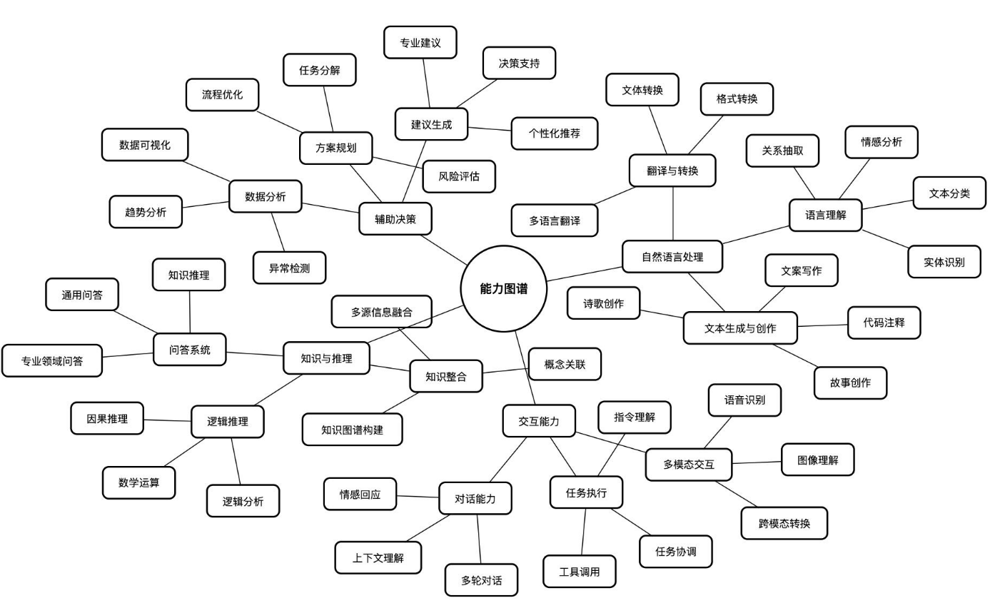

程序员田总：DeepSeek从入门到精通，2025年3月17日。此处仅引用其中文能力图作为科普分类示意，保留原图；不采纳该文对具体模型效果与能力的全部评价。该图不是官方统一标准，也不是某一个产品的能力清单。
Google Cloud：人工智能的应用介绍语言处理、视觉、预测分析与机器人等应用。NVIDIA：生成式人工智能介绍文字、代码、图像、音频、视频等内容生成。演示图右侧内容生成补充依据该官方资料整理。
2026年9月14日查阅。该图展示常见方向，不穷尽全部人工智能能力；实际可用能力取决于模型、工具与部署方式。外部原文保留原始语言。